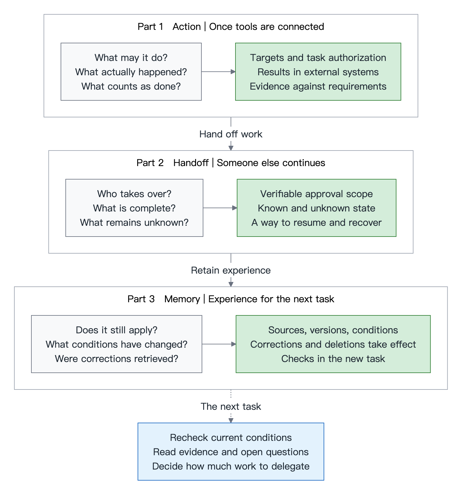

AAIF TOKYO NOTES · A THREE-PART GUIDE
When we delegate to agents,
what evidence must remain?
From an action, through a handoff, to experience the next task can use.

Gray boxes hold the questions, green boxes the evidence to preserve, and blue the judgment that evidence supports.